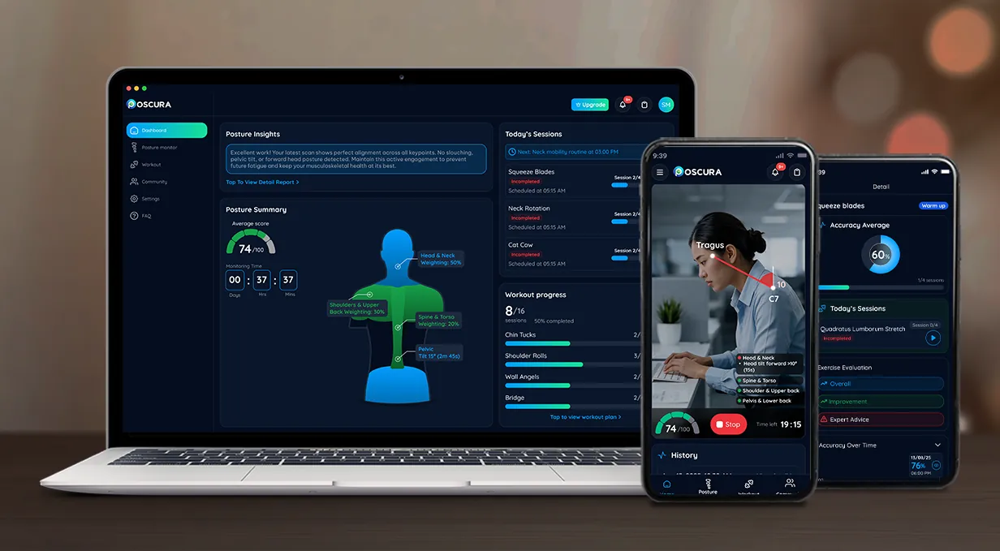
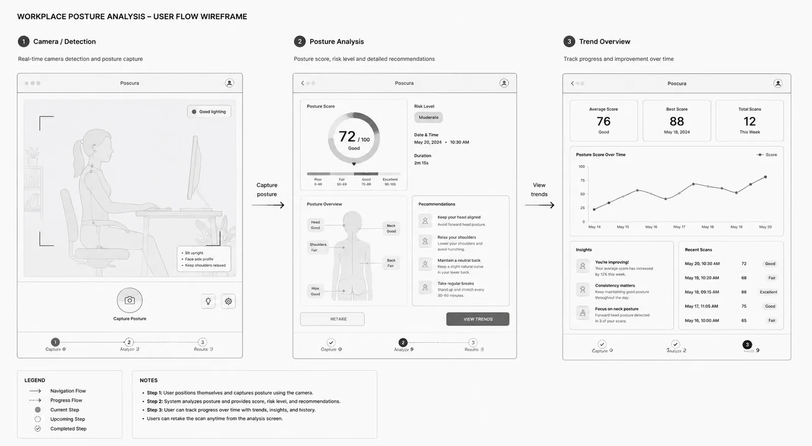
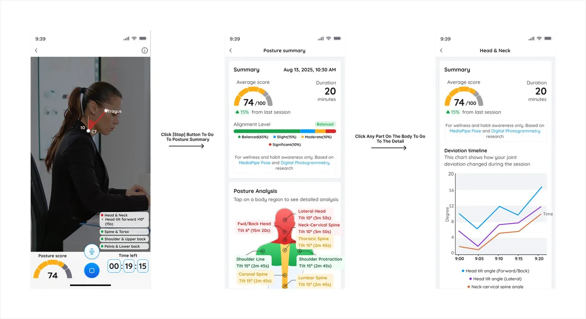
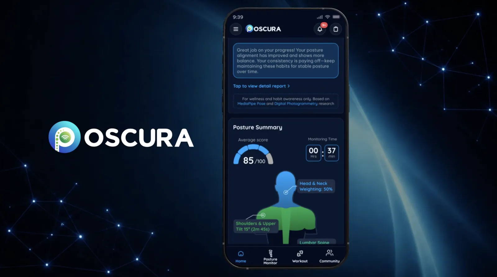
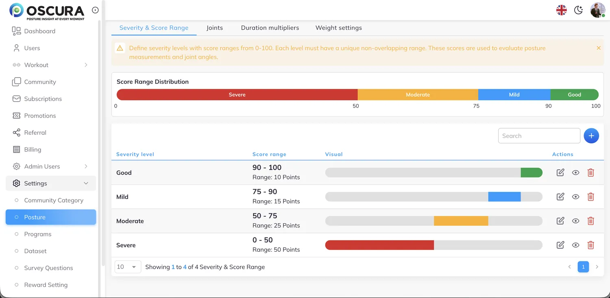
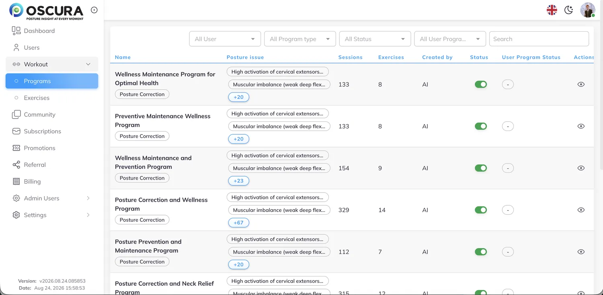
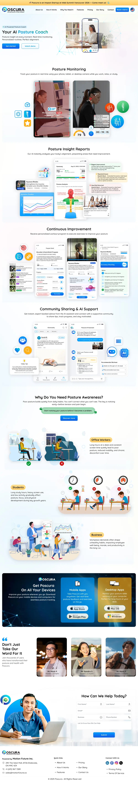

Poscura: from posture data to clear scores and next steps
An intelligent posture-monitoring platform. I worked across the product: brand, landing page, mobile and desktop apps, CMS views and the Figma library behind them.

At a glance
Problem
Posture and spinal-alignment data had to be presented so that office workers and students could understand it and act on it.
My role
Senior UI/UX designer and front-end developer, from brand and landing page to mobile, desktop and CMS interfaces.
Delivered
Mobile and desktop UI, a responsive landing page, brand assets, a brochure, a promotional video, a Figma component library and CMS and front-end views.
Context and process
Poscura analyzes posture and spinal alignment to give users real-time insights, posture assessments and personalized recommendations. The target users are office workers and students.
I researched the problem and agreed the solution together with the business analyst team, and worked with developers throughout. I also supported CMS and HTML-based views, which helped bridge design and front-end implementation.
- Problem definition
- Research
- Wireframes
- UI design
- Prototype
- Final output
Key decisions
Plan the flow before the visuals
I structured the capture, analysis and detail flow, navigation and information hierarchy as wireframes first, then applied the visual system.

Turn data into a score, a body map and a detail view
Live monitoring leads to a posture summary with an average score and an alignment level, then to a body map where tapping a region opens its detail and a deviation timeline.

Say what the score is
The interface states that the score is for wellness and habit awareness only and names its research basis, so users are not led to read it as a medical result.

Give administrators safe controls
In the CMS, severity levels need unique, non-overlapping score ranges, and the interface says so. Programs and exercises are managed through list and detail views.


System
I created and maintained UI components and design patterns in Figma so that mobile, desktop, the landing page and the CMS stay consistent. The same system carries the brand: a logo for light and dark themes, an app icon and a four-color palette.
How I used AI
I used AI tools to support the app introduction video and the layout work on this project: ChatGPT, Magnific and Google Nano Banana. They sped up exploration and production, and I made the design decisions and the final composition myself.
What shipped
- Mobile and desktop apps focused on posture monitoring, results, insights, reports and recommendations.
- A responsive landing page with information architecture, visual design and conversion sections.
- Brand identity, a tri-fold brochure and an app introduction video.
- CMS interfaces and HTML-based views supporting front-end development.
Watch the app introduction video
Landing page
